screenshots
Nordstjernen in action — rendered by its own clean-room engine, no Blink,
no WebKit, no Gecko. Click the image to view it full size.
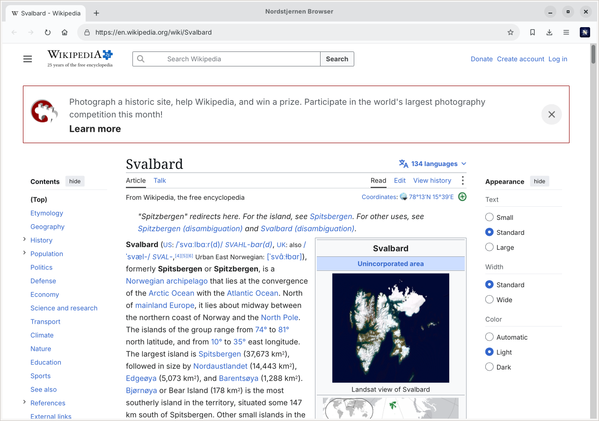
Nordstjernen 1.0.29 on Wikipedia — the article text flows beside the floated infobox, the browser’s name sits in the title bar, and the “N” is back at the end of the toolbar.
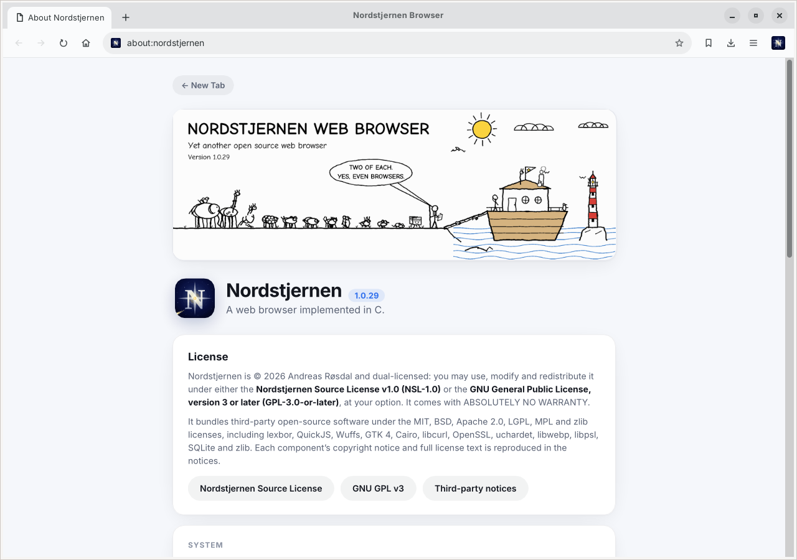
Nordstjernen 1.0.29’s about:nordstjernen page — the ark comic, the version and the dual GPL / NSL license.
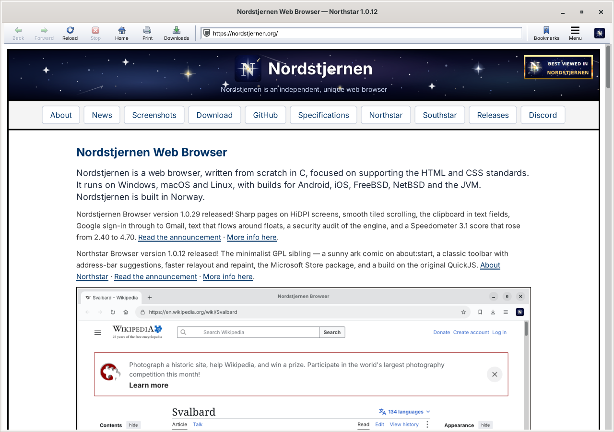
Northstar 1.0.12, the minimalist GPL edition, rendering this site — the classic toolbar, and nordstjernen.org announcing Nordstjernen 1.0.29.
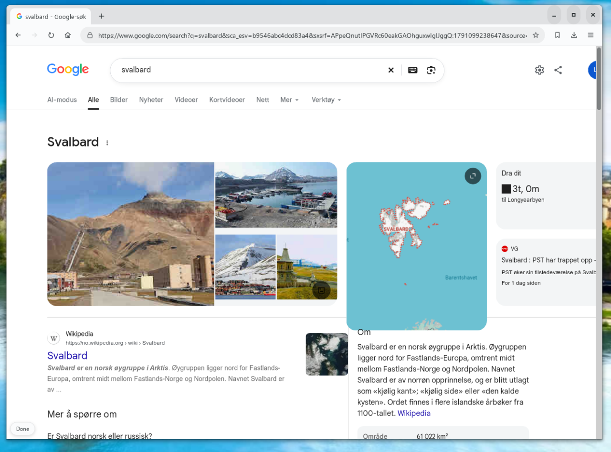
Nordstjernen 1.0.28 in its redesigned, flatter window, running Google’s own search page for Svalbard — image gallery, map and knowledge panel.
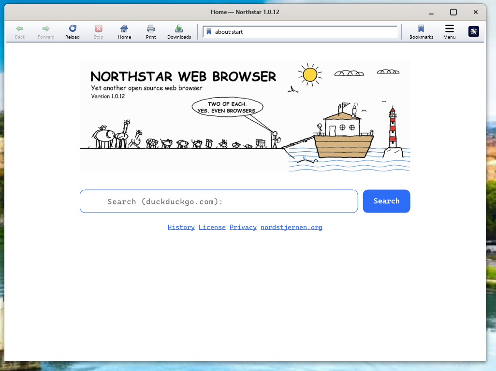
Northstar 1.0.12, the minimalist GPL edition — the classic toolbar and the sunny ark comic on about:start: “Two of each. Yes, even browsers.”
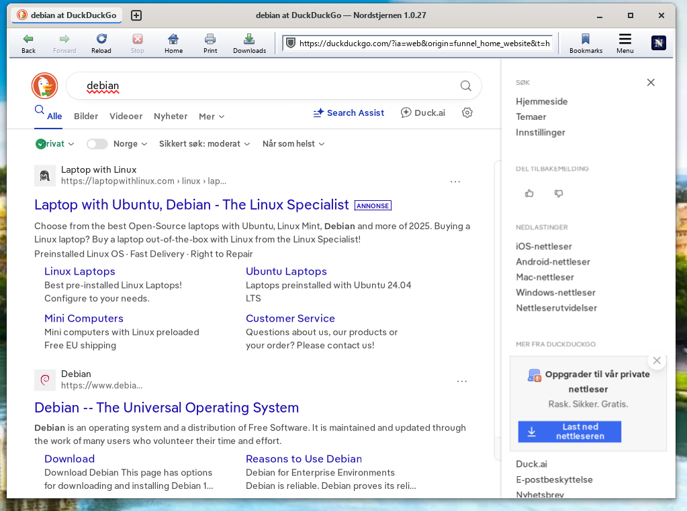
Nordstjernen 1.0.27 with DuckDuckGo, the new default search engine, and the classic labelled toolbar.
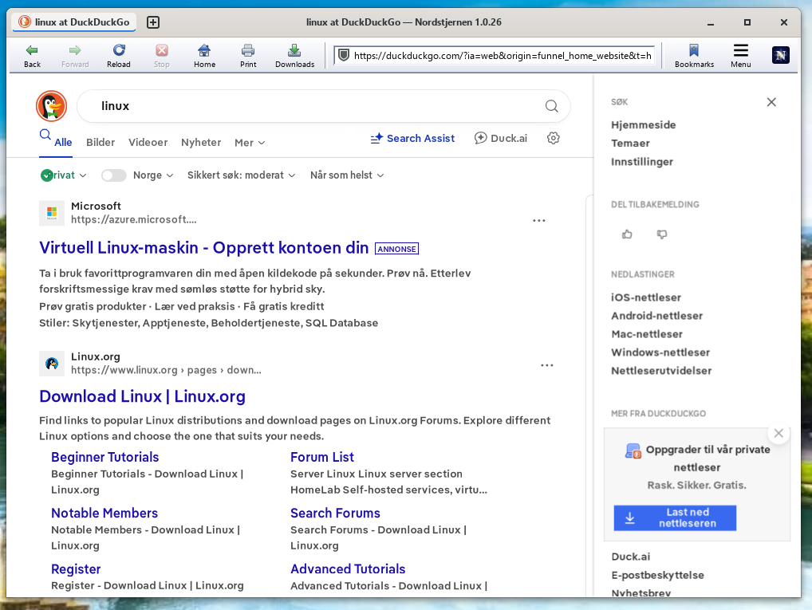
Nordstjernen 1.0.26 searching DuckDuckGo.
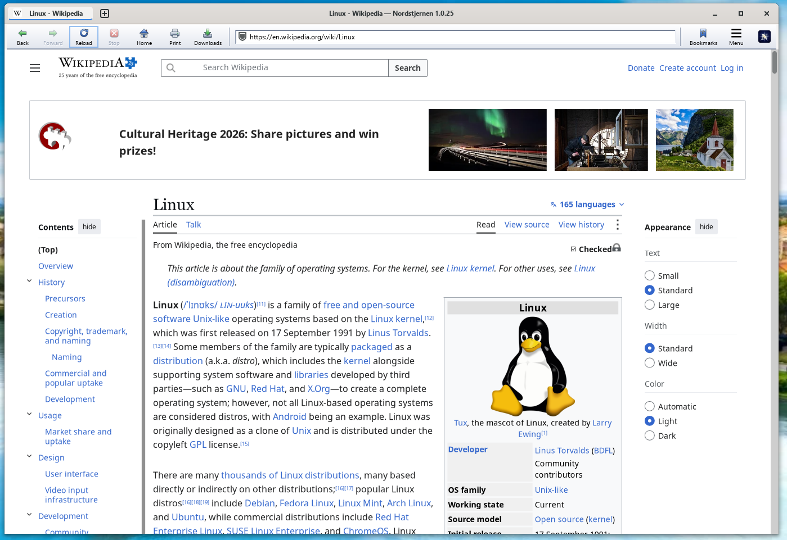
Nordstjernen 1.0.25 rendering the Wikipedia article on Linux, with the contents sidebar and the appearance panel.
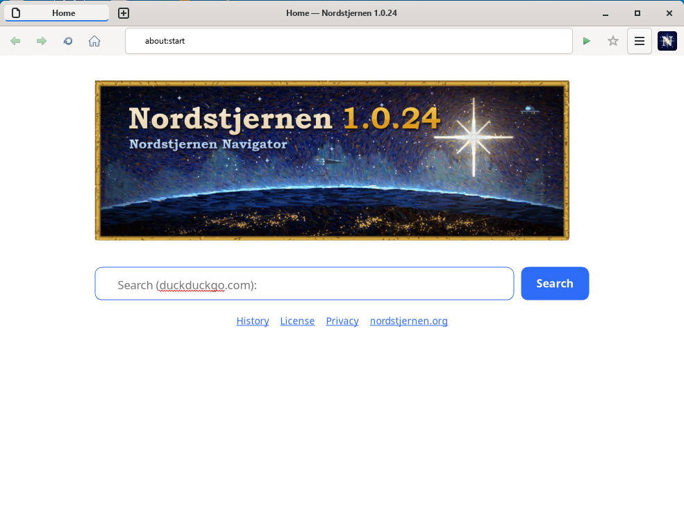
Nordstjernen 1.0.24’s about:start page — the Nordstjernen Navigator splash, painted in an impressionist hand with a gilded frame, over the night side of the earth.
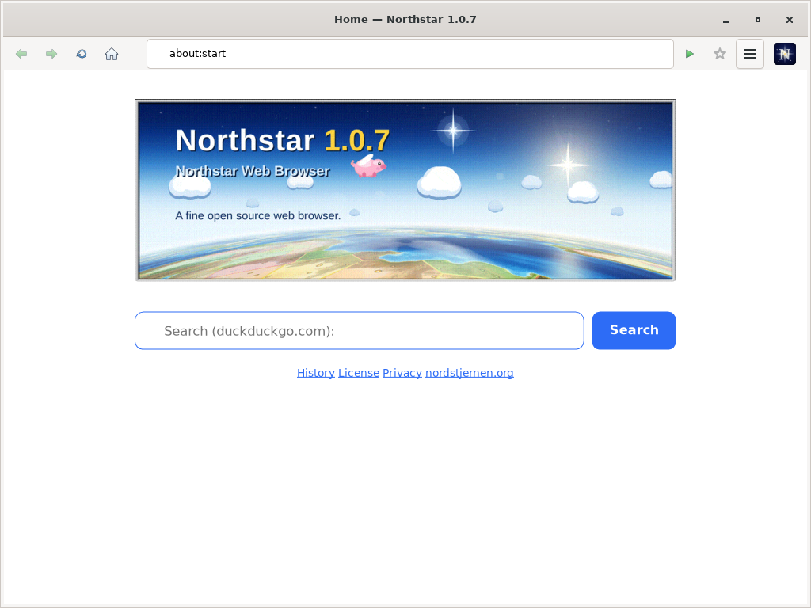
Northstar 1.0.7 — the sky-and-earth splash: a scattering atmosphere, and an earth settled into nations below it.
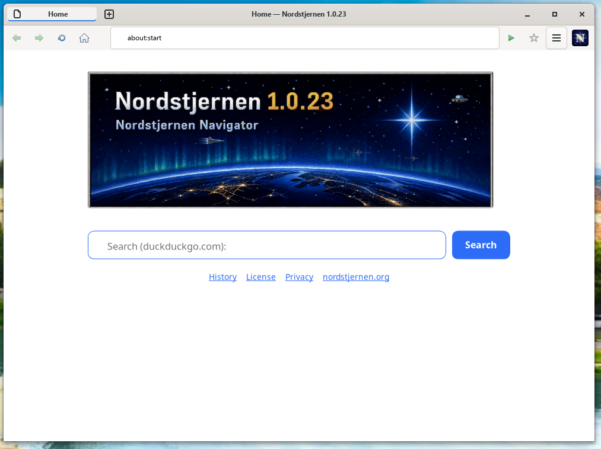
Nordstjernen 1.0.23’s about:start page — the same scene as rendered before the painted splash.
« back to home